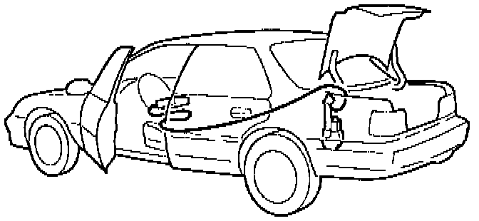

Coaxial Cable Test
1. Test drive the car to verify the customer's description of the symptom.^ If the symptom cannot be reproduced, contact the customer for more information regarding the symptom.
^ If the symptom can be reproduced, continue with step 2.
2. Disconnect the power antenna coaxial cable from the power antenna and from the radio.

3. Install a substitute coaxial cable (P/N 39159-SD4-A04) to the antenna; then run the substitute cable on the outside of the car, and connect it to the radio.
NOTE:
When substituting the coaxial cable on a 1994-95 Integra. be sure to plug the substitute cable directly into the back of the radio. Do not connect the substitute cable into the short coaxial cable that connects the rear coaxial to the radio; that could give you a faulty test result.
4. Test the radio.
^ If the symptom has gone away, install a new coaxial cable.
^ If the symptom persists, the problem is not with the antenna system. Disconnect the substitute cable, reconnect the original coaxial cable, and continue troubleshooting the audio system.